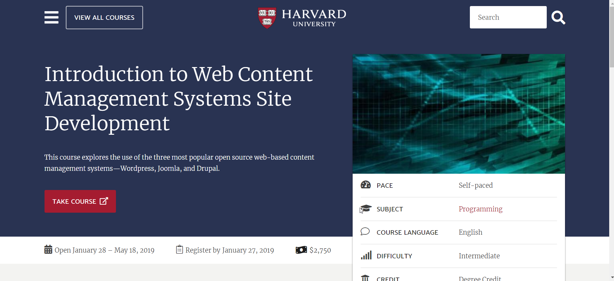

Development of CMS-based Web Applications with a Multi-Language Model-Driven Approach.pdf (2013 Ph.D. Dissertation)
https://sdsu-dspace.calstate.edu/bitstream/handle/10211.10/3228/Shah_Rima.pdf (local download)
Web Content Management Software Usability and Performance.pdf (2018 M.S. Thesis)
